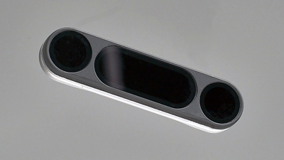
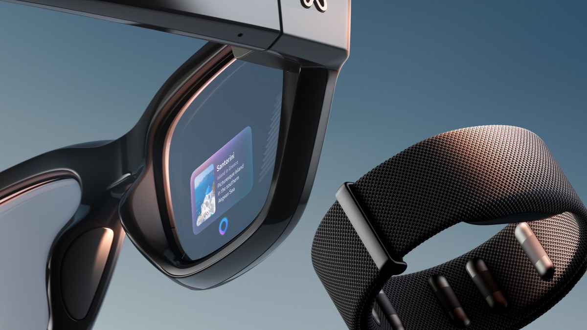
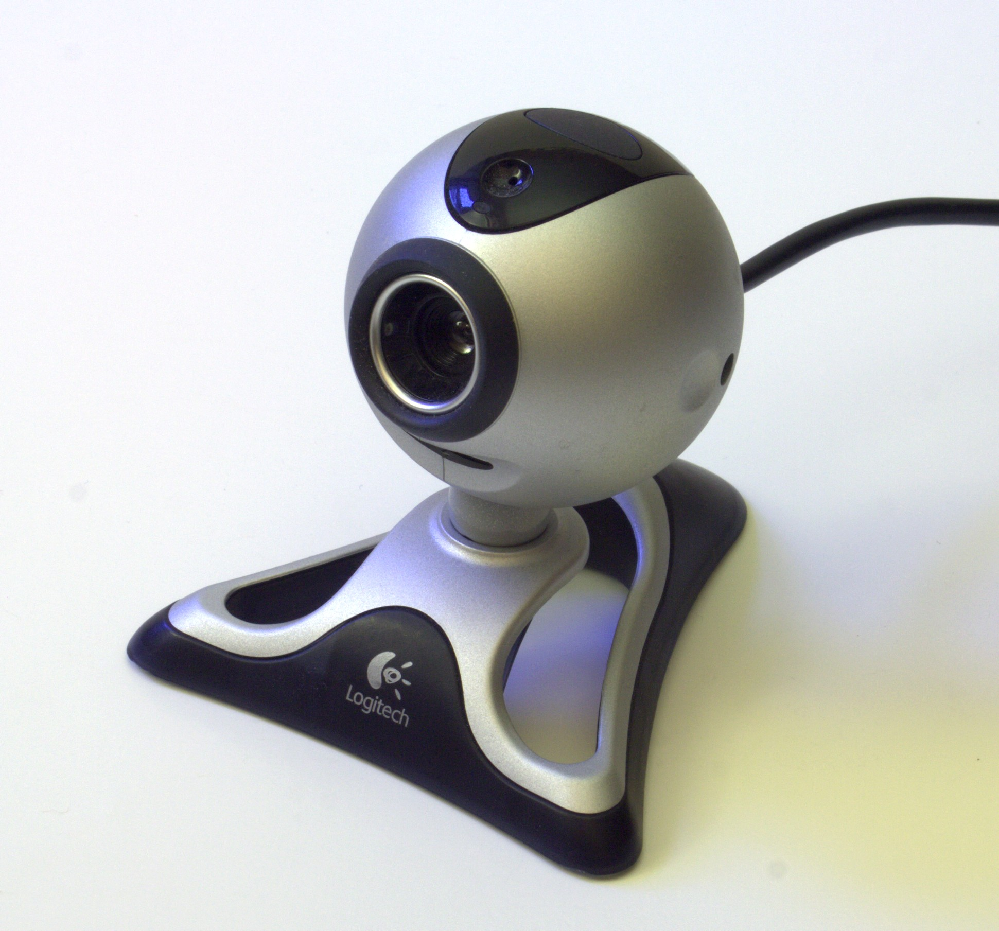
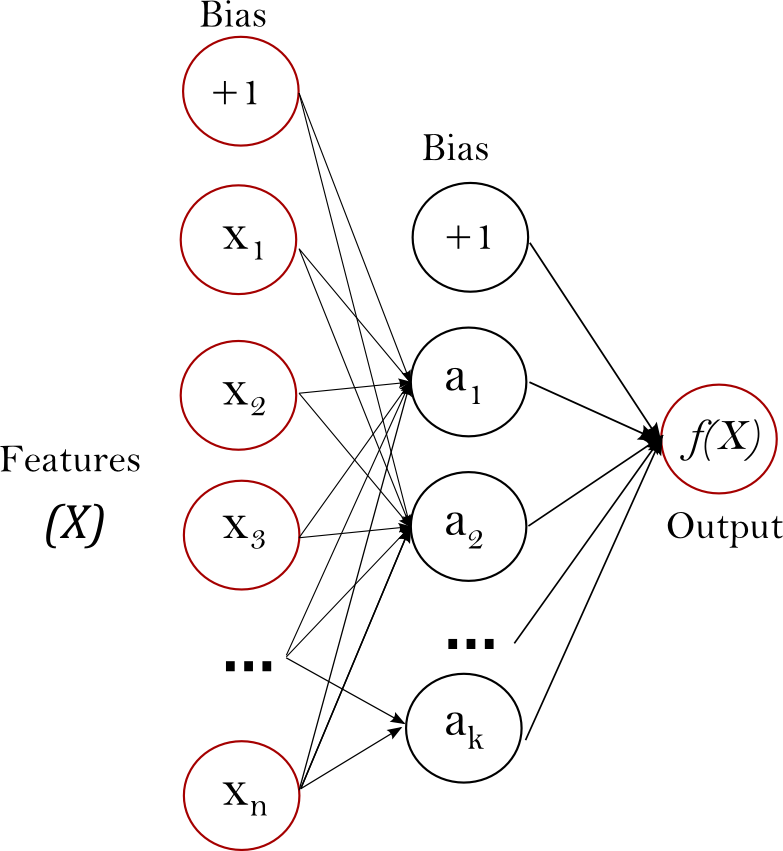
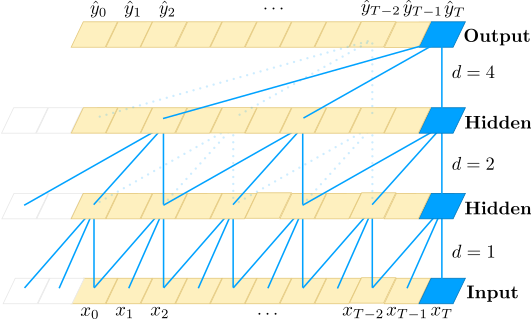
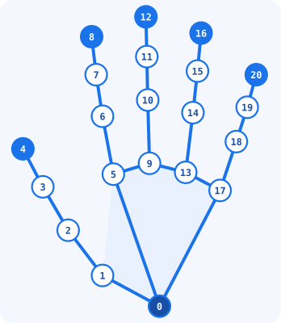

웹캠의 손 관절을 추적해 등록한 포즈·모션을 입력에 연결 손이 없거나 손가락이 하나인 사용 환경은 아직 지원을 검증하지 않았습니다
THE NEXT INTERFACE
Next Interface

UltraLeap

Meta
전용 센서와 웨어러블을 넘어 그냥 웹캠으로는 안 될까?
지금 가진 웹캠으로
전용 센서안경 + 손목밴드
Windows PC + 웹캠 + MANUX
마우스를 대신하는 손
Play Pad
손바닥 눕히기 · 엄지 + 새끼
게임으로 익히는 클릭과 드래그 · 기본 마우스 동작부터 트랙패드 기능까지
LIVE 01 / CLICK
Click.
엄지 + 중지 · 약지 눌러서 터뜨리세요
좌클릭 · 우클릭 양쪽 동시 클릭까지
좌클릭 · 우클릭 · 양쪽 동시
LIVE 02 / DRAG
Drag.
맞댄 채 움직이면 끌려옵니다
구슬을 잡고 던져 보세요 우클릭 드래그는 보라색 선
DRAG · RIGHT DRAG
LIVE 03 / SCROLL
Scroll.
맞대고 굴리면 화면이 흐릅니다
엄지 + 검지 → 스크롤 맞댄 채 상하 이동 → 휠 회전
CIELAB · sRGB 색 영역 (L* a* b*)
PLAY WITH MANUX
손짓으로 선택하다.
커서를 옮기고 엄지와 중지를 맞대세요.
게임 안에서는 슬라이드가 넘어가지 않습니다.
MINESWEEPER
지뢰찾기
SPIDER / ONE SUIT
스파이더
섞인 13장을 K부터 A까지. 한 단계 큰 숫자 아래로 옮기세요.
0 이동 ·0 / 1 완성
MANUX 기본 입력: 엄지 + 중지로 클릭 · 맞댄 채 이동해 드래그 · 손을 떼어 놓기
TRACKPAD FUNCTIONS
바탕화면과 열린 창까지
손바닥 눕히기: 바탕화면 보기 엄지 + 새끼: 작업 전환
MANUX로 실제 Windows 화면을 시연합니다
HOW IT WORKS
Technology Stack

01
웹캠
02
MediaPipe

03
Spatial MLP

04
TCN
05
Windows
Python
OpenCV
NumPy
ONNX Runtime
Qt/QML
이미지 출처: Dave Pape, Wikimedia Commons (public domain); Google MediaPipe (CC BY 4.0); scikit-learn 문서; Bai et al., arXiv:1803.01271 Figure 1; Wikimedia Commons Windows logo
MEDIAPIPE HAND LANDMARKER
MediaPipe
영상에서 손을 찾고›

관절 위치를 좌표로
손의 위치와 모양을 다음 모델이 읽을 수 있게
Google AI Edge · MediaPipe Hand Landmarker · CC BY 4.0
LANDMARKS TO STABLE INPUT
좌표만으로는 부족한 순간
2D 거리 판정
우클릭이 좌클릭으로
3D SPATIAL MLP
손 모양 자체를 봅니다
기울기 · 가림 화면 속 거리가 겹칩니다
좌표 떨림 입력도 흔들릴 수 있습니다
저장 모델 기록(2026.11.09): 17,689표본 · 내부 분할 정확도 98.84% · 학습 1.39초 독립 사용자 정확도·2D 규칙 대비 개선율을 측정한 수치가 아닙니다
 02
02